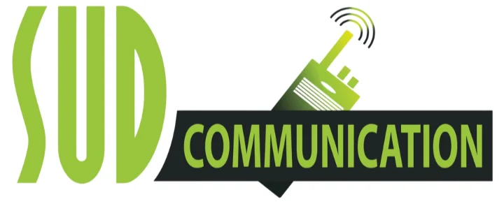

Présentation de l'entreprise
Fondée en 1998 à Mauguio (Hérault), la société Sud Communication est une entreprise hautement spécialisée dans le domaine de la radiocommunication professionnelle et des technologies d'électronique embarquée de navigation.
Elle fournit des solutions complètes de communication maritime, terrestre et aéronautique, incluant la vente, l'installation, le service après-vente (SAV), le dépannage métrologique et la formation. Sud Communication collabore étroitement avec des leaders mondiaux comme Icom, Motorola et Kenwood, équipant aussi bien des navires de commerce, des bateaux de plaisance que des réseaux de communication industriels terrestres.
Mon rôle et mes réalisations
J'ai intégré le service technique de Sud Communication lors de mon stage de fin de deuxième année de BUT (BUT2) :
- Maintenance et Diagnostic de Radios : Prise en charge des radios VHF maritimes (ex: Icom IC-M35) et portatifs professionnels. Analyse et réparation au niveau des circuits de modulation et des étages d'amplification RF.
- Tests Métrologiques : Mesure de la puissance d'émission (en Watts) et du taux d'ondes stationnaires (TOS) via des wattmètres/ROS-mètres (type Surecom SW-102) pour valider la conformité des antennes et des émetteurs.
- Programmation et Configuration : Programmation logicielle de fréquences privées et de canaux d'urgence sur les terminaux radio selon la réglementation de l'ANFR.
Cette expérience immersive m'a permis d'appliquer mes connaissances théoriques en électronique analogique, traitement RF, antennes et propagation d'ondes, tout en me familiarisant avec le secteur de la maintenance électronique industrielle.